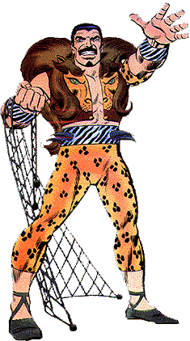
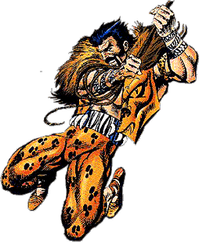
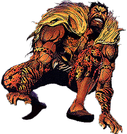

|
 |
Name: Sergei Kravinoff ID: No dual Identity Relatives: Vladimir Kravinoff (Grim Hunter), Son, Deceased...Alyosha Kravinoff (Kraven II), Son Affiliates: Former Member Of The Sinister Six...Ally of Gog, The Gibbon, Lightmaster, & The Chameleon. Enemies: Spider-Man, Ka-Zar, Daredevil, Man-Wolf Powers: Superhuman Strength , speed of up to 60 miles per hour, agility, stamina. Also skilled at taming wild beasts, using exotic animal fighting techniques...Uses nerve punch that can paralyze...Also uses various weaponry such as darts, spears, axes, nets, whips, poisons, and gases. Origin: The son of a Russian aristocrat , Sergei found he had a great talent after finding employment in Africa...After meeting a witch doctor, Kraven took a herbal potion which enhanced his physical powers...He used his new found powers to further aid his big hunts...He soon befriended the Chameleon who suggested his biggest hunt of his life: Spider-Man! |
|
1st App.: Amazing Spider-Man #15 Death: Amazing Spider-Man #294 Spider-Man Appearances: Amazing Spider-Man #15, 18, 34, 47, 49, 103, 104, 110, 111, 209, 293, 29 & Annual #1...Spectacular Spider-Man #2, 65 & 131...Marvel Team-Up #67...Web Of Spider-Man #31 & 32...Sensational Spider-Man Annual '96...Amazing Spider-Man: Soul Of The Hunter #1...Ka-Zar V3 #21 Other Appearances: Tales Of Suspense #58...Astonishing Tales #1 & 2...Daredevil #104 & 105...Marvel Chillers #4...Creatures On The Loose #32 & 33...Ka-Zar V3 #19-21...West Coast Avengers #3...Secret Wars II #7...Ka-Zar V2 #20...Deadpool #11...X-Men: The Hidden Years #16 & 17 |
 |
|  |
Spider-Man Feared Rating: 8 (out of 10)
|